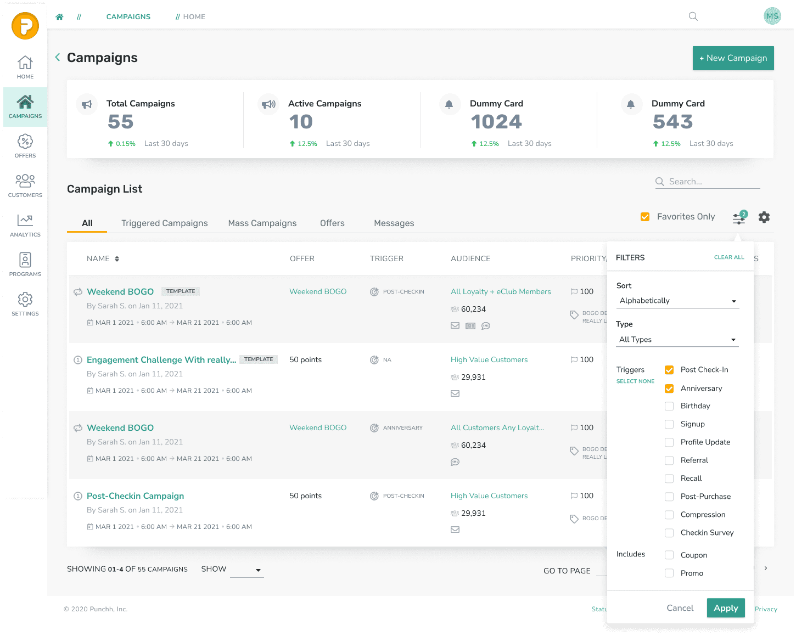
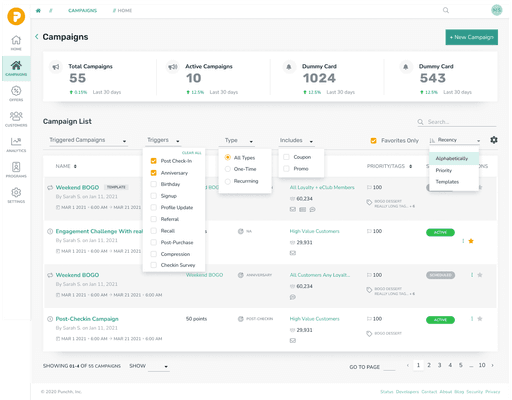
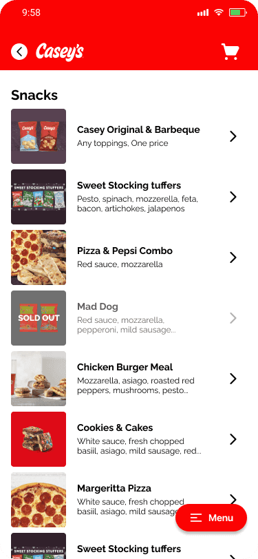
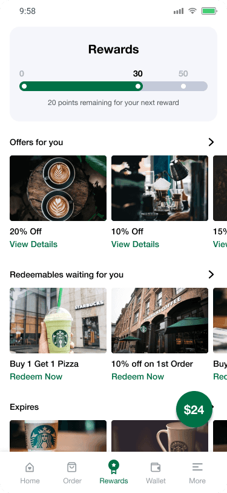
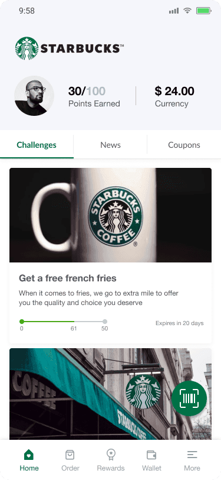
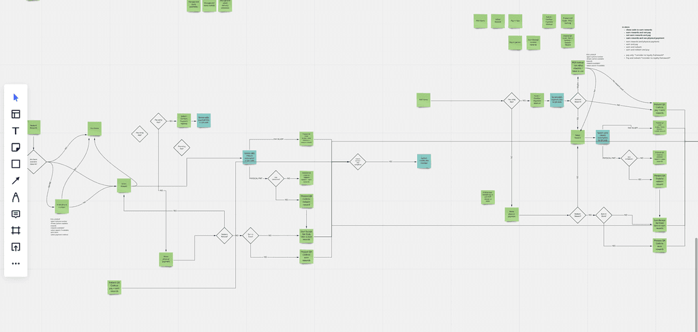
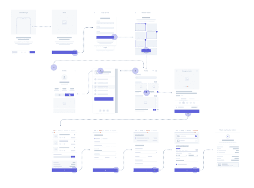

Punchh
I was the only mobile designer at Punchh and owned the white-label framework behind hundreds of restaurant apps. Delivery took off during COVID and our UI looked old.

I was the only mobile designer at Punchh and owned the white-label framework behind hundreds of restaurant apps. Delivery took off during COVID and our UI looked old.
White-label is the whole problem. A QSR and a sit-down place don’t want the same app. Some care about points, some about modifiers. One system had to cover that without looking generic.
I started with a competitive audit of the restaurant apps people already used — not to copy them, to see which patterns had become expected. Then I wired deals, customize, rewards.
A lot of UI versions. Stakeholders picked apart each one. The question was always: can another brand skin this without breaking checkout, rewards, or the order flow?
Navigation, hierarchy, and buttons stayed consistent. Color, logo, photos, and menu shape could move.
Rewards could be points, punch cards, or tiers. Food customization could be “add bacon” or a full builder. Same frame.
Restaurants using Punchh could look current without giving up how they look. For Punchh it was the difference between “fine” and “we can keep this account.”






